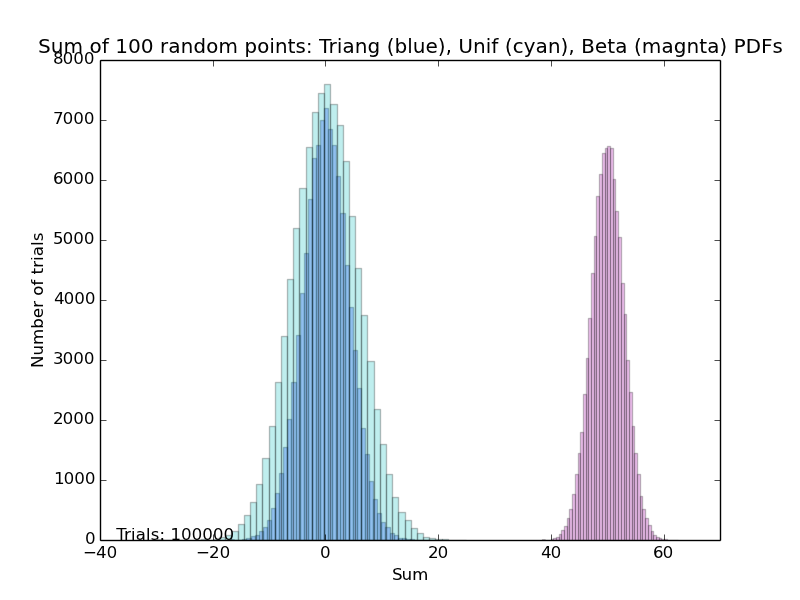

To quote from http://en.wikipedia.org/wiki/Probability_and_statistics: "Probability and statistics are two related but separate academic disciplines. Statistical analysis often uses probability distributions, and the two topics are often studied together. However, probability theory contains much that is mostly of mathematical interest and not directly relevant to statistics. Moreover, many topics in statistics are independent of probability theory."
Manuales, diccionarios, bibliografías..
Hájek, Alan, "Interpretations of Probability"
The Stanford Encyclopedia of Philosophy
(Winter 2012 Edition), Edward N. Zalta (ed.)
http://plato.stanford.edu/archives/win2012/entries/probability-interpret
Stuart, Alan; Ord, Keith
Kendall's Advanced Theory of Statistics
Volume 1, Distribution Theory
6th Edition
2010
Wiley, NY
ISBN: 978-0-470-66530-5
The Mathematical Atlas,
En este recurso se encuentran:
Una explicación didáctica
Una breve descripción de la relación con otras ramas de las matemáticas(“Applications and related fields”)
Menciones a obras de referencia (“Textbooks, reference works, and tutorials”).
Consúltese MathGuide: Statistics, 60 Probability theory and stochastic processes
Hacking, Ian: The Emergence of Probability: A Philosophical Study of Early Ideas about Probability, Induction and Statistical Inference. Cambridge University Press.
Cambridge University Press
http://lccn.loc.gov/89033269
New York : Wiley, c1990, ISBN 0471502308
Kolmogorov, Andreĭ Nikolaevich
Foundations of the theory of probability
Uniform title: Grundbegriffe der Wahrscheinlichkeitsrechnung
Chelsea Pub. Co., New York, 1950

In the stand-alone version, this hyperlink will open the file with the mind map itself. (This hyperlink points to a local file, and does not work in the web page.)
Manuales, diccionarios, bibliografías..
The Statistical Reference Datasets Project, developed by staff of the Statistical Engineering Division and the Mathematical and Computational Sciences Division within the Information Technology Laboratory of the National Institute of Standards and Technology.
The Mathematical Atlas,
En este recurso se encuentran:
Una explicación didáctica
Una breve descripción de la relación con otras ramas de las matemáticas(“Applications and related fields”)
Menciones a obras de referencia (“Textbooks, reference works, and tutorials”).
Consúltese MathGuide: Algebra 08 General algebraic systems
http://lccn.loc.gov/89033269
New York : Wiley, c1990, ISBN 0471502308
Incluye hipervínculos hacia AMD MathSciNet y zbMath.
Manuales, diccionarios, bibliografías...
Consúltese MathGuide: Statistics 65 Numerical Analysis
Goldstine, Herman Heine.
A history of numerical analysis from the 16th through the 19th century
Springer-Verlag, Berlin-New York, 1977.
ISBN 9781468494723
This hyperlink points to a local file, and does not work in the web page.
Clicking on the mind map icon to open the map that contains the root node for the entire tree of ReferencesAndResources.
In the stand-alone version, this hyperlink opens a local directory. This hyperlink does not work in the web page.